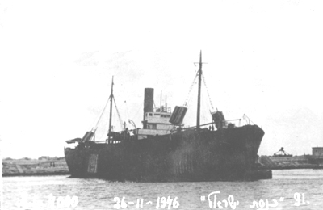

חברות וחברי משפחת 'כנסת ישראל' היקרים,
על החופים האלה, שבהם נשברים גלי הים התיכון, נכתב אחד הפרקים הדרמטיים ביותר בסיפור הקמתה של מדינת ישראל. אל חופים האלה הגיעו סבים הורים ואולי חלקכם אחרי מסע תלאות, הראשונים ממשפחתם בשרשרת הדורות. נאבקו בבריטים על הזכות להגיע למולדת האבות. ראו את הארץ ושרו "התקווה" לפני הגירוש הכואב למחנות בקפריסין.
היום, יש לנו הזדמנות היסטורית להבטיח שהסיפור הזה לא יישכח לעולם.
אנחנו נמצאים בישורת האחרונה ממש של פרויקט להנצחת מורשת ההעפלה בשיתוף עם פרויקט "שביל הים" – שביל הליכה לאומי ורציף לאורך חופי המדינה, שבו צועדים אלפי מטיילים, בני נוער, משפחות ותיירים. בשיתוף פעולה ייחודי, קיבלנו את המנדט להקים לאורך השביל שלטי הנצחה ונקודות מידע אינטראקטיביות, שיספרו את סיפורי ההעפלה המרגשים בנקודות שבהן ספינות המעפילים הגיעו אל החוף (או שהיו מיועדות אליו). מיזם זה הינו מיזם מרכזי של ארגון מעפילי קפריסין.
כדי להשלים את התקנת 30 שלטי ההנצחה – אנחנו צריכים אתכם איתנו.
כיצד אתם יכולים לעזור? אנו קוראים לכל אחד ואחת מחברי משפחת הספינה 'כנסת ישראל' לקחת חלק במאמץ המשותף ולתרום לפרויקט. כל תרומה, קטנה כגדולה, תוקדש ישירות למימון חומרי שלט ההנצחה, והנגשת המידע למטיילים בשטח.
שלט ההנצחה המתוכנן ינגיש למטיילים בשטח את נתוני ההפלגה המרכזיים באמצעות סריקת קוד QR ייעודי במכשיר הנייד:
| פרק בהיסטוריה | נתוני הפלגת הגבורה של 'כנסת ישראל' |
|---|---|
| נמל ומועד היציאה | האונייה הפליגה מנמל באקאר שביוגוסלביה ב- 5 בנובמבר 1946 (בליווי האונייה הקטנה יותר "אבא ברדיצ'ב"). |
| מספר המעפילים | על סיפונה של האונייה הצטופפו 3,845 מעפילים (לאחר שהעלתה גם את מעפילי "אבא ברדיצ'ב"), מגדולי מסעות ההעפלה. |
| ההגעה והעימות עם הבריטים | ב-26 בנובמבר 1946 הגיעה האונייה למפרץ חיפה. המעפילים גילו התנגדות עזה ונחושה מול כוחות הצי הבריטי שניסו לעלות על הסיפון, בקרב קשה שגבה מחיר כבד. |
| הגירוש לקפריסין | לאחר המאבק, גורשו אלפי המעפילים באופן כואב אל מחנות המעצר הבריטיים בקפריסין, שם המתינו עד לשחרורם ועלייתם לארץ. |
| מיקום מתוכנן לשלט ההנצחה בשביל | בחוף נהריה - מקום ההנחיתה המתוכנן |
זהו הרגע שלנו להבטיח שמורשת מעפילי קפריסין תהיה חלק בלתי נפרד מנוף מולדתנו. הים זוכר, ועכשיו גם המטיילים יזכרו.